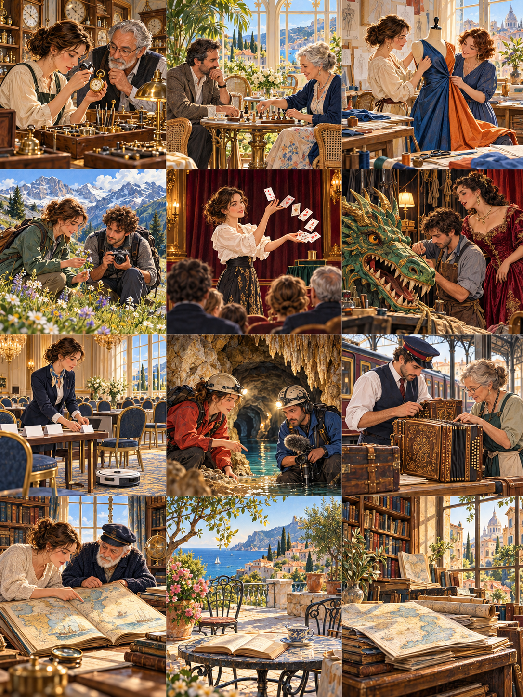

Du pollen sur la boussole
Pollen on the Compass
A field botanist and an impatient photographer search a mountain valley for a flower that refuses to match its portrait.

À sept heures, le photographe avait déjà demandé trois fois quand nous trouverions la fleur. Je lui avais répondu que les plantes sauvages ne confirmaient pas leurs rendez-vous par message. Notre mission consistait à photographier une petite gentiane dans une vallée alpine, afin d'illustrer un guide de randonnée. Sur l'image du dossier, elle était d'un bleu presque électrique. Hugo avait préparé ses objectifs pour cette couleur précise. Moi, je transportais surtout des carnets, une loupe et assez de nourriture pour patienter. Botaniste depuis quinze ans, j'avais appris que les bonnes observations commençaient souvent après l'abandon d'une attente trop précise.
Show English translationHide English translation
By seven o'clock, the photographer had already asked three times when we would find the flower. I had replied that wild plants did not confirm their appointments by text. Our assignment was to photograph a small gentian in an Alpine valley to illustrate a hiking guide. In the file's picture, it was an almost electric blue. Hugo had prepared his lenses for that precise color. I mainly carried notebooks, a magnifying glass, and enough food to wait. After fifteen years as a botanist, I had learned that good observations often began after abandoning an overly specific expectation.
Le sentier traversait une prairie où nous reconnûmes les feuilles attendues, mais les corolles restaient fermées. Hugo soupçonna une erreur de saison. Je lui expliquai que certaines fleurs réagissaient à la lumière et à la température : bien que le ciel soit clair, le sol demeurait froid. Il fallait attendre que le soleil atteigne le versant. Cette réponse l'agaça davantage qu'un changement d'itinéraire. Sa rédaction exigeait les photographies avant le soir. Il proposa de revenir à la voiture chercher une lampe puissante. Je lui demandai plutôt de s'asseoir dix minutes, ce qui lui sembla une méthode étonnamment peu scientifique.
Show English translationHide English translation
The path crossed a meadow where we recognized the expected leaves, but the flowers remained closed. Hugo suspected we had come in the wrong season. I explained that some flowers reacted to light and temperature: although the sky was clear, the ground remained cold. We needed to wait for the sun to reach the slope. This answer annoyed him more than a change of route would have. His editors wanted the photographs by evening. He suggested going back to the car for a powerful lamp. Instead, I asked him to sit for ten minutes, which struck him as a surprisingly unscientific method.
Pendant cette pause, il remarqua un insecte minuscule accroché à une tige. Puis un autre, presque transparent, qui semblait examiner une feuille avec autant d'attention que nous. Il commença à photographier ces visiteurs sans leur demander de respecter son programme. Lorsque la première gentiane s'ouvrit, il était allongé dans l'herbe, occupé à suivre une fourmi. La fleur n'avait pas la couleur du dossier : son bleu tirait légèrement sur le violet. Hugo me demanda si nous avions trouvé une espèce rare. Je comparai les caractères visibles, puis lui montrai comment la balance des couleurs pouvait modifier une photographie ancienne.
Show English translationHide English translation
During that pause, he noticed a tiny insect clinging to a stem. Then another, almost transparent, which seemed to examine a leaf as carefully as we did. He began photographing these visitors without asking them to keep to his schedule. When the first gentian opened, he was lying in the grass, busy following an ant. The flower was not the color in the file: its blue leaned slightly toward violet. Hugo asked whether we had found a rare species. I compared the visible characteristics, then showed him how color balance could alter an old photograph.
À midi, une brume fine descendit sur la prairie. Nous aurions pu repartir avec quelques gros plans corrects, mais Hugo souhaitait désormais montrer le milieu entier. Il choisit un cadrage où apparaissaient les pierres, la pente et un morceau de ciel. La fleur y semblait beaucoup moins spectaculaire. « On va me dire qu'elle est trop petite », murmura-t-il. Je ne pouvais garantir que sa rédaction apprécierait ce choix. Pourtant, sans cet espace autour d'elle, le lecteur aurait imaginé une plante de jardin, disponible à volonté, plutôt qu'un être vivant dont la présence dépendait d'un équilibre particulier.
Show English translationHide English translation
At noon, a thin mist descended on the meadow. We could have left with a few decent close-ups, but Hugo now wanted to show the whole habitat. He chose a frame containing the stones, the slope, and a piece of sky. The flower looked much less spectacular in it. "They'll tell me it's too small," he murmured. I could not guarantee that his editors would appreciate this choice. Yet without that space around it, readers would have imagined a garden plant, available on demand, rather than a living thing whose presence depended on a particular balance.
Le guide publia finalement les deux images côte à côte. Hugo avait ajouté une courte légende sur l'heure d'ouverture, après m'avoir demandé de vérifier chaque mot. Quelques semaines plus tard, il m'envoya un cliché pris près de chez lui : une fleur banale poussait entre deux marches. Il n'en connaissait pas le nom et ne réclamait pas de réponse urgente. Sous la photographie, il avait écrit : « Je suis revenu après le déjeuner. Elle était différente. » Je souris en rangeant mon téléphone. Nous n'avions découvert aucune espèce nouvelle dans la montagne ; lui avait cependant rapporté une manière de regarder qui ne tenait pas dans son sac.
Show English translationHide English translation
The guide eventually published both images side by side. Hugo had added a short caption about the opening time, after asking me to check every word. A few weeks later, he sent me a photograph taken near his home: an ordinary flower was growing between two steps. He did not know its name and was not demanding an urgent answer. Beneath the photograph he had written: "I came back after lunch. It was different." I smiled as I put away my phone. We had discovered no new species in the mountains; nevertheless, he had brought back a way of looking that would not fit inside his bag.